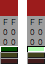

The Auxiliary attributes of a Color
An auxiliary attribute is represented following:
| Mask(prohibit overriding) | This attribute indicats that prohibit override with other colors. |
|---|---|
| Not use(exclude color) | This attribute indicats that do not use within drawing. Also, It color is excluded when automatically color choose in mixing of color. |
| Transparent | This attribute indicats that transparent which can see below layer. This attribute can choose either transparent or opaque. |
Edit of An Auxiliary Attribute
To edit an auxiliary attribute(give/deprive), it is able to do on coloe element of palette window.
As described there with respect to detail of a color(each color), switch attibute with press main button.
| Mask |  | A mask(prohibit override) attribute is switched. Dark green () represent that disable mask(no prohibit override). Light green () represent that enable mask(prohibit override). |
|---|---|---|
| Not use |  |
A not-use(exclude color) attibute is switched. Dark yellow (  ) represent that usable color. ) represent that usable color.Light yellow () represent that unuable color(not-use color). |
| Transparent |  |
A transparent attribute is switched. Dark red (  ) represent that opaque. ) represent that opaque.Light red (  ) represent that transparent. ) represent that transparent. |